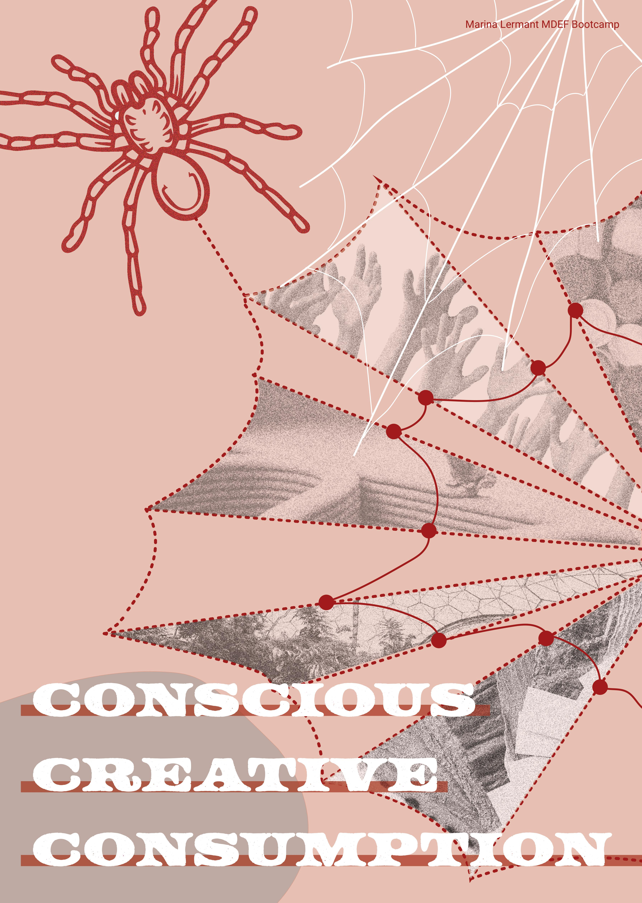

Hello there! Welcome to my website. At the time this website is undergoing its creation and development, I am currently a student studying for a Masters In Design For Emergent Futures at the Institute for Advanced Archtitecture of Catalunya. Previously, I earned an undergraduate degree in landscape architecture from California Polytechnic State University. As a young professional, I am interested in sustainibility in design, circular economy, biomimetic & biophilic design, systems thinking, material literacy, and behavior in design to name a few. I hope to focus my design practice in the future within these topics. In my free time, I enjoy cooking up plenty of stir fry plates, spending time at the beach, sharing a matcha tea with friends, and exploring Barcelona as the new city I call home.
Our very first assignment was defining your “fight”. What makes you tick, where your passion comes from, what is the reason for pursuing a Master in Design for Emergent Futures? I have many causes that I care about, and I sat for a long while just being and thinking. I started by asking myself some big questions to see what emotions came about. What is wrong with the world? What is beautiful about the world? Where is the disconnect between the two and what is the role of humans within that? One of the most important realizations I have had in the past couple years is that our day to day life is completely based on the design decisions of others. People have designed everything in the world we live in thus far. However, I am not comfortable with some of those decisions and systems around them. The time we live in is full of environmental and social strife. My hope is that we can solve some of those issues through better design that is constantly adapting to create a world that is evolving for the better. Our nature of consumption is destroying the planet, and our mismanagement of resources attributes to that. Rather than holding a mindset that consumption can suddenly stop or even slow down, we must learn how to be smarter about it. How can we do more, use less? How can we optimize efficiency using the tools and technologies of the present? In order to do any of this, we need to start being conscious and creative with our consumption. To think in innovative ways that challenge the paradigm of how people are used to living. To design in ways that look to nature as the most evolved engineering and enliven people to the world around them. With this as the basis of my thought process, I am led to the phrase: creative conscious consumption. In order to achieve this, I’d like to focus a large part of my attention on materiality. Materials are the building blocks of our physical world. By creating more conscious materials, I believe we can be less wasteful and manage resources more responsibly. In order to illustrate this concept in my poster, I have used the motif of a spider and its web. The material of the web, silk, is an extremely thin, stretchy, and strong material that emulates the perfection of nature’s engineering, along with the natural beautiful geometry it forms. To me, it highlights why biomimicry can be so important. Material matters. Its web represents each connection between design decisions and their effects, and how everything is related to form a network. Finally, the web is a trap for the spider’s prey. Its device for consumption. Like the spider, I’d like to design for a consumptive society in a way that is self-sustaining, strong, flexible, and beautiful. There are better, smarter ways to design if people change the way they think and the approach they take towards it.
